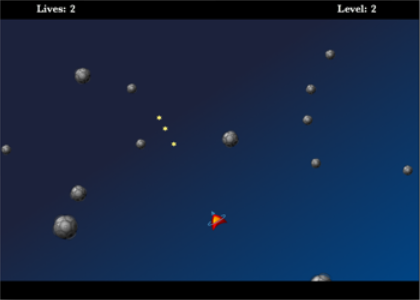

Please note: this article is part of the older "Objective-C era" on Cocoa with Love. I don't keep these articles up-to-date; please be wary of broken code or potentially out-of-date information. Read "A new era for Cocoa with Love" for more.
An Asteroids-style game in CoreAnimation, Part One.
How would you write an arcade-style 2D game in CoreAnimation? Over the next few weeks, I'll show you how to write a resolution independent, high-speed, model-view-controller designed, Asteroids-style arcade game using CoreAnimation as the screen renderer. In this first of four parts, I'll detail the concept for the overall application and show you how to create a resolution independent window for the game.
A screenshot of the finished game
CoreAnimation as a game renderer
Drawing on the Mac is normally done through either CoreGraphics or OpenGL. OpenGL is fast, supports 2D and 3D and is already used in many games. However, OpenGL is a low-level, pure-C API, so even simple rendering and animating of 2D surfaces can require a whole library of code to accomplish.
CoreGraphics and the NSView hierarchy are a whole library of well-written code. They are clean to use and support a wide range of features without needing to write them yourself. Sadly, CoreGraphics is not ideal for games since it does not easily render 30 fullscreen frames per second (the minimum standard for action games) — even with Quartz Extreme and the other improvements Apple has added since Mac OS X 10.0.
This is where CoreAnimation comes in. Apple introduced CoreAnimation in Mac OS X 10.5 (Leopard) to dramatically accelerate the animation of 2D rectangular textures. Since it integrates so well into the existing CoreGraphics and NSView hierarchy on the Mac, it suddenly gives CoreGraphics a way of delivering 30 (or more) fullscreen frames per second and makes a writing a game possible using nothing more than the Foundation, AppKit and QuartzCore libraries.
Quartzeroids One
The application I'll present over the next few weeks will be similar to an experiment I wrote about 8 years ago. Back then, the application was named Quartzeroids and it was an experiment to see if NSViews were fast enough to use for a 2D Asteroids game. The code was not good — if you find it out in the wild, keep your distance and call animal control.
Were NSViews fast enough for this type of animation? No, not really. At 640 by 480, the game played at 15 frames-per-second on my iMac G3 500Mhz. Computer and operating-system improvements have improved this (newer Intel Macs can now render this old 640 by 480 screen size at more than 30 frames per second) but even newer machines cannot maintain good frame rates at proper fullscreen resolutions of 1920 by 1200 using this approach.
Quartzeroids Two
Since Apple released CoreAnimation 15 months ago, I had been wanting to revisit the idea. To further increase the difficulty, I decided the project should also contain the following features:
- Resolution independence (all vector graphics and completely resizeable).
- Proper model-view-controller implementation where the "game-state" is the model and the view is free to reinterpret the state for the purposes of display.
- Fullscreen or windowed mode for display.
Rough design
A rough block diagram of the program would look like this:
The decisions I think were most significant are:
- There is not a one-to-one relationship between objects in the Game Data and Layers in the Window.
- The updates to the Game Data are triggered by the Game Data's own timer, not directly by the controller (which can start and stop but nothing further).
The second point is most significant when the Game Data is compared to a normal application document. A normal document never updates itself — it only changes when instructions are sent from a controller. In a game however, choosing when to update is a part of the game logic (which I have included in the model) so the controller shown here is left with only the simplest level of control.
I spent some time deliberating about whether to make the GameData a normal document object or a singleton. A normal document style object can be swapped with another document or recreated. A singleton is lazier and simpler since it doesn't need to be connected to every object which needs to access it (since it is globally accessible). Ultimately, the convenience of a singleton won over the hypothetical flexibility of a normal document object since the game will only ever be strictly single instance.
A resolution independent, constant aspect-ratio view
To get the code started for the project, I'll show you how the top level of the CALayer hierarchy (named backgroundLayer in the application since it shows the background for the game) is implemented inside the contentView for the window.
The two hardest constraints for the backgroundView are maintaining a constant aspect ratio and maintaining a constant internal coordinates when the surrounding window resizes or reshapes.
- (void)updateContentViewFrame:(NSNotification *)notification
{
double gameWidth = [[GameData sharedGameData] gameWidth];
double gameHeight = [[GameData sharedGameData] gameHeight];
NSSize contentSize = [contentView bounds].size;
NSSize aspectSize = contentSize;
double scale;
if ((aspectSize.width / aspectSize.height) > (gameWidth / gameHeight))
{
scale = aspectSize.height / gameHeight;
aspectSize.width = aspectSize.height * (gameWidth / gameHeight);
}
else
{
scale = aspectSize.width / gameWidth;
aspectSize.height = aspectSize.width * (gameHeight / gameWidth);
}
[CATransaction begin];
[CATransaction
setValue:(id)kCFBooleanTrue
forKey:kCATransactionDisableActions];
backgroundLayer.transform = CATransform3DMakeScale(scale, scale, 1.0);
backgroundLayer.frame =
CGRectMake(
0.5 * (contentSize.width - aspectSize.width),
0.5 * (contentSize.height - aspectSize.height),
aspectSize.width,
aspectSize.height);
[CATransaction commit];
[contentView becomeFirstResponder];
}The GameController adds this method as an observer of the contentView's NSViewFrameDidChangeNotification. The gameWidth and gameHeight methods on the GameData objecct are programmed to return values with a 16:10 ratio (matching common widescreen computer aspect ratios). The aspectSize calculated here is then the largest size that obeys this ratio and can fit inside the contentView.
Finally, the CATransform3DMakeScale transform, applied to the backgroundLayer before the frame is set, causes the backgroundLayer to always treat its internal coordinates as though they are gameWidth by gameHeight. This will mean that any layers our game adds to the backgroundLayer's subview hierarchy will always render at a constant fraction of the backgroundLayer's size. Order is important here: apply the transform after the frame is set and it will behave differently.
The other required behavior of the window is switching to fullscreen and back. This is another task which became extremely simple in Mac OS X 10.5:
- (IBAction)toggleFullscreen:(id)sender
{
if ([contentView isInFullScreenMode])
{
[contentView exitFullScreenModeWithOptions:nil];
}
else
{
[contentView
enterFullScreenMode:[[contentView window] screen]
withOptions:nil];
for (NSView *view in [NSArray arrayWithArray:[contentView subviews]])
{
[view removeFromSuperview];
[contentView addSubview:view];
}
}
}The "for" loop is an annoying necessity: if you don't do this for a CoreAnimation layer-enabled NSView, then all child NSViews will fail to update correctly after a switch to fullscreen.
Conclusion
You can download Quartzeroids2 Part 1 (20kb) which shows the full implementation of the window,A simple as this game is, it is too big to describe in one post — this is as far as I'll get this week. I've presented a few goals, a rough design and the window management code for the game.contentViewandbackgroundLayer.
In the next post, I'll start to put objects in the game and layers in the window.
Breadth-first traversal of a graph of Objective-C objects
An Asteroids-style game in CoreAnimation, Part Two.